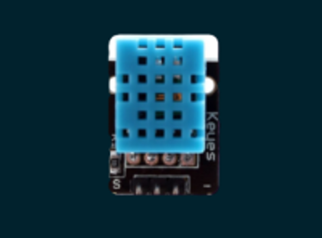
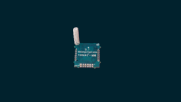
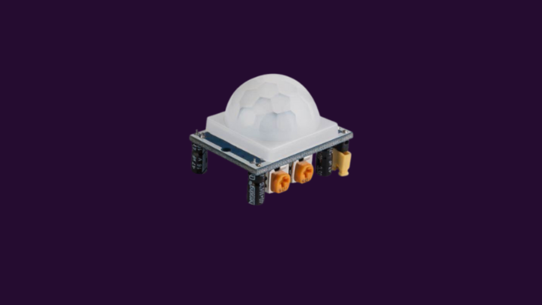

Es un módulo compacto y económico que combina un microcontrolador ESP32 con conectividad
Wi-Fi y Bluetooth, y una cámara, ideal para aplicaciones de visión artificial, IoT y domótica.

DHT11
Es un sensor económico y sencillo para medir temperatura y humedad relativa. Es ampliamente
utilizado en proyectos de electrónica y sistemas de monitoreo ambiental.

LoRaWAN
LoRaWAN es un protocolo de red diseñado para comunicaciones inalámbricas de largo alcance y
bajo consumo, ideal para dispositivos IoT.

PIR
El sensor PIR detecta movimiento al captar cambios en la radiación infrarroja emitida
por los cuerpos en su entorno. Es eficiente y de bajo consumo.